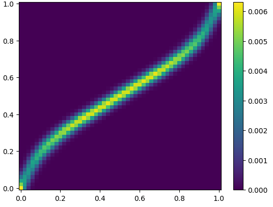

Constrained Optimal Transport for Semi-Supervised Domain Adaptation
Optimal Transport
Domain Adaptation
Resource Sharing
Developed and tested constrained optimal transport algorithms for semi-supervised domain adaptation and leveraging flexibility in resource allocation.